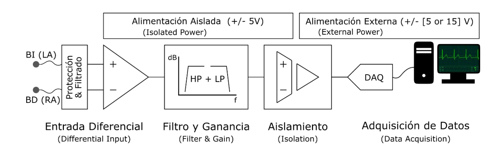

Design of an isolated measurement channel for ECG signals
Introduction
The Electrocardiography (ECG) technique allows to visualize the electrical activity of the heart over a period of time and thus identify the activity of the myocardium. The heart beats at a certain periodic rate caused by its expansion and contraction facilitating the flow of blood throughout the body. This periodic frequency of activity of the heart is caused by the depolarization of the myocardium, which, in turn, generates the electrical impulses that we can visualize with the ECG.
The executions of this project has been carried out by Lucía Chacón and myself under the supervision of Dr Jordi Colomer, and has entailed a total dedication of 110 hours. The main objective of this work was to the design a measurement system to perform an ECG of a lead. At the first stage of the project, it had been studied the heart's electrical activity, all the derivations a ECG is composed of and the CE classification and legislations.
The front-end of this project is presented in the following diagram:
To study the set-up of the ECG, its stages and amplifiers, several LTSpice simulations were performed. During the experimental tests the following devices were used: Analog Discovery 2, MyDaq, Oscilloscope, multimeter and function generator. Using LabView an acquisition user interface was created to visualize the final electrocardiograph. Finally, the circuit was tested connecting three electrodes to a patient.
For more detail, I encourage you to read our report!